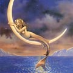

Німфи, в грецькій міфології божества природи, її цілющих і плодоносних сил в образі прекрасних дівчат. Найдавніші, меліади, народилися з крапель крові оскопленного Урана. Розрізняють німф водних (океаніди, нереїди, наяди), озер і боліт (лімнади), гір (Орестіада), гаїв (альсеіди), дерев (дріади, Гамадріади), гір (ореади) і т. Д. Імена німф, пов'язаних з водою , найчастіше вказують на ту чи іншу властивість водної стихії. Німфи зазвичай вважалися дочками Зевса, супутницями Артеміди або Діоніса. Німфи були володарками давньої мудрості, таємниць життя і смерті, цілителька і пророчиця.
Від шлюбів з богами німфи народжували героїв і віщунів, наприклад Axілла, Еака, Тіресія. Красуні, які зазвичай мешкали далеко від Олімпу, за велінням Зевса призивалися в чертоги батька богів і людей. З міфів, пов'язаних з німфами і нереїдами, найбільш відомий міф про Посейдона і Амфітріте. Одного разу Посейдон побачив біля берега острова Наксос як водять хоровод сестри-нереїди, дочки морського віщого старця Нерея. Зачарувався Посейдон красою однієї з сестер - прекрасної Амфітрітою, і хотів відвезти її на своїй колісниці. Але Амфітріта сховалася у титану Атласу, який тримає на своїх могутніх плечах небесне склепіння. Довго не міг знайти Посейдон прекрасну Амфітриту, дочка Нерея. Нарешті відкрив йому її притулок дельфін. За цю послугу Посейдон помістив дельфіна серед небесних сузір'їв. Посейдон викрав у Атласу прекрасну дочку Нерея і одружився на ній.
Русалки, в міфології східних слов'ян, духи природи, втілені у вигляді красивих невинних (або часом нещасних) дівчат. В уявленнях про русалок у слов'ян, особливо в українців і південних російських, незбагненним чином поєдналися риси духів води (річкові русалки), родючості (польові русалки) і «нечистих» небіжчиків (утоплених). У східних слов'ян існує весняний, веселий і завзятий, язичницьке свято Русалії.